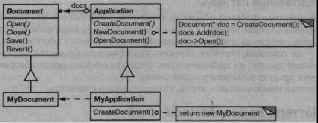
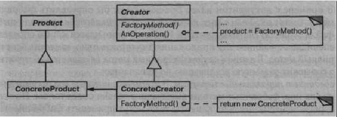

Паттерн Factory Method
Название и классификация паттерна
Фабричный метод - паттерн, порождающий классы.
Назначение
Определяет интерфейс для создания объекта, но оставляет подклассам реше ние о том, какой класс инстанцировать. Фабричный метод позволяет классу де легировать инстанцирование подклассам.
Известен также под именем Virtual Constructor (виртуальный конструктор).Мотивация
Каркасы пользуются абстрактными классами для определения и поддержания отношений между объектами. Кроме того, каркас часто отвечает за создание са мих объектов.
Рассмотрим каркас для приложений, способных представлять пользователю сразу несколько документов. Две основных абстракции в таком каркасе - это классы Application и Document. Оба класса абстрактные, поэтому клиенты должны порождать от них подклассы для создания специфичных для приложения реализаций. Например, чтобы создать приложение для рисования, мы определим классы DrawingApplication и DrawingDocument. Класс Application отве чает за управление документами и создает их по мере необходимости, допустим, когда пользователь выбирает из меню пункт Open (открыть) или New (создать).
Поскольку решение о том, какой подкласс класса Document инстанцировать, зависит от приложения, то Application не может «предсказать», что именно по надобится. Этому классу известно лишь, когда нужно инстанцировать новый доку мент, а не какой документ создать. Возникает дилемма: каркас должен инстанциро вать классы, но «знает» он лишь об абстрактных классах, которые инстанцировать нельзя.
Решение предлагает паттерн фабричный метод. В нем инкапсулируется ин формация о том, какой подкласс класса Document создать, и это знание выводит ся за пределы каркаса.
Подклассы класса Application переопределяют абстрактную операцию CreateDocument таким образом, чтобы она возвращала подходящий подкласс класса Document. Как только подкласс Application инстанцирован, он может инстанцировать специфические для приложения документы, ничего не зная об их классах. Операцию CreateDocument мы называем фабричным методом, по скольку она отвечает за «изготовление» объекта.
Применимость
Используйте паттерн фабричный метод, когда:
- а классу заранее неизвестно, объекты каких классов ему нужно создавать;
- а класс спроектирован так, чтобы объекты, которые он создает, специфици ровались подклассами;
- а класс делегирует свои обязанности одному из нескольких вспомогательных подклассов, и вы планируете локализовать знание о том, какой класс при нимает эти обязанности на себя.
Структура
Участники
- a Product (Document) - продукт:
- - определяет интерфейс объектов, создаваемых фабричным методом;
- a ConcreteProduct (MyDocument) - конкретный продукт:
- - реализует интерфейс Product;
- a Creator (Application) - создатель:
- - объявляет фабричный метод, возвращающий объект типа Product. Creator может также определять реализацию по умолчанию фабрич ного метода, который возвращает объект ConcreteProduct;
- - может вызывать фабричный метод для создания объекта Product.
- a ConcreteCreator (MyApplication) - конкретный создатель:
- - замещает фабричный метод, возвращающий объект ConcreteProduct.
Отношения
Создатель «полагается» на свои подклассы в определении фабричного ме тода, который будет возвращать экземпляр подходящего конкретного продукта.
Результаты
Фабричные методы избавляют проектировщика от необходимости встраивать в код зависящие от приложения классы. Код имеет дело только с интерфейсом класса Product, поэтому он может работать с любыми определенными пользова телями классами конкретных продуктов.
Потенциальный недостаток фабричного метода состоит в том, что клиентам, возможно, придется создавать подкласс класса Creator для создания лишь од ного объекта ConcreteProduct. Порождение подклассов оправдано, если кли енту так или иначе приходится создавать подклассы Creator, в противном слу чае клиенту придется иметь дело с дополнительным уровнем подклассов.
А вот еще два последствия применения паттерна срабричный метод:
- а предоставляет подклассам операции-зацепки (hooks). Создание объектов внутри класса с помощью фабричного метода всегда оказывается более гиб ким решением, чем непосредственное создание. Фабричный метод создает в подклассах операции-зацепки для предоставления расширенной версии объекта. В примере с документом класс Document мог бы определить фабричный метод CreateFileDialog, который создает диалоговое окно для выбора файла существующего документа. Подкласс этого класса мог бы определить специализированное для приложения диалоговое окно, заместив этот фаб- ричный метод. В данном случае фабричный метод не является абстрактным, а содержит разумную реализацию по умолчанию;
- а соединяет параллельные иерархии. В примерах, которые мы рассматривали
до сих пор, фабричные методы вызывались только создателем. Но это со
вершенно необязательно: клиенты тоже могут применять фабричные мето
ды, особенно при наличии параллельных иерархий классов.
Параллельные иерархии возникают в случае, когда класс делегирует часть
своих обязанностей другому классу, не являющемуся производным от него.
Рассмотрим, например, графические фигуры, которыми можно манипули
ровать интерактивно: растягивать, двигать или вращать с помощью мыши.
Реализация таких взаимодействий с пользователем - не всегда простое
дело. Часто приходится сохранять и обновлять информацию о текущем со
стоянии манипуляций. Но это состояние нужно только во время самой ма
нипуляции, поэтому помещать его в объект, представляющий фигуру, не
следует. К тому же фигуры ведут себя по-разному, когда пользователь ма
нипулирует ими. Например, растягивание отрезка может сводиться к изме
нению положения концевой точки, а растягивание текста - к изменению
междустрочных интервалов.
При таких ограничениях лучше использовать отдельный объект-манипуля-
тор Manipulator, который реализует взаимодействие и контролирует его те
кущее состояние. У разных фигур будут разные манипуляторы, являющиеся
подклассом Manipulator. Получающаяся иерархия класса Manipulator
параллельна (по крайней мере, частично) иерархии класса Figure.
Класс Figure предоставляет фабричный метод CreateManipulator, ко
торый позволяет клиентам создавать соответствующий фигуре манипуля
тор. Подклассы Figure замещают этот метод так, чтобы он возвращал под
ходящий для них подкласс Manipulator. Вместо этого класс Figure может
реализовать CreateManipulator так, что он будет возвращать экземпляр
класса Manipulator по умолчанию, а подклассы Figure могут наследовать
 это умолчание. Те классы фигур, которые функционируют по описанному
принципу, не нуждаются в специальном манипуляторе, поэтому иерархии
параллельны только отчасти.
Обратите внимание, как фабричный метод определяет связь между обеими
иерархиями классов. В нем локализуется знание о том, какие классы спо
собны работать совместно.
это умолчание. Те классы фигур, которые функционируют по описанному
принципу, не нуждаются в специальном манипуляторе, поэтому иерархии
параллельны только отчасти.
Обратите внимание, как фабричный метод определяет связь между обеими
иерархиями классов. В нем локализуется знание о том, какие классы спо
собны работать совместно.
Реализация
Рассмотрим следующие вопросы, возникающие при использовании паттерна фабричный метод:
class Creator {
public:
virtual Product* Create(Productld);
};
Product* Creator::Create (Productld id) {
if (id == MINE) return new MyProduct;
if (id == YOURS) return new YourProduct;
// выполнить для всех остальных продуктов...
return 0;
}
Замещение параметризованного фабричного метода позволяет легко и изби
рательно расширить или заменить продукты, которые изготавливает созда
тель. Можно завести новые идентификаторы для новых видов продуктов или
ассоциировать существующие идентификаторы с другими продуктами.
Например, подкласс MyCreator мог бы переставить местами MyProduct
и YourProduct для поддержки третьего подкласса Their Product:
Product* MyCreator::Create (Productld id) {
if (id == YOURS) return new MyProduct;
if (id == MINE) return new YourProduct;
// N.B. : YOURS и MINE переставлены
if (id == THEIRS) return new TheirProduct;
return Creator::Create(id); // вызывается, если больше ничего
//н е осталось
}
Обратите внимание, что в самом конце операция вызывает метод Create ро
дительского класса. Так делается постольку, поскольку MyCreator: : Create
обрабатывает только продукты YOURS, MINE и THEIRS иначе, чем родитель
ский класс. Поэтому MyCreator расширяет некоторые виды создаваемых
продуктов, а создание остальных поручает своему родительскому классу;clientMethod document := self documentClass new. documentClass self subclassResponsibility а в классе MyApplication documentClass ^ MyDocumentчто возвращает класс MyDocument, который должно инстанцировать при ложение Application. Еще более гибкий подход, родственный параметризованным фабричным методам, заключается в том, чтобы сохранить подлежащий созданию класс в качестве переменной класса Application. В таком случае для измене ния продукта не нужно будет порождать подкласс Application. В C++ фабричные методы всегда являются виртуальными функциями, а час то даже исключительно виртуальными. Нужно быть осторожней и не вызы вать фабричные методы в конструкторе класса Creator: в этот момент фаб ричный метод в производном классе ConcreteCreator еще недоступен. Обойти такую сложность можно, если получать доступ к продуктам только с помощью функций доступа, создающих продукт по запросу. Вместо того чтобы создавать конкретный продукт, конструктор просто инициализирует его нулем. Функция доступа возвращает продукт, но сначала проверяет, что он существует. Если это не так, функция доступа создает продукт. Подоб ную технику часто называют отложенной инициализацией. В следующем примере показана типичная реализация:
class Creator {
public:
Product* GetProduct();
protected:
virtual Product* CreateProduct();
private:
Product* _product;
};
Product* Creator: :GetProduct () {
if (.product == 0) {
_product = CreateProduct ( ) ;
}
return _product;
}
class Creator {
public :
virtual Product* CreateProduct () = 0;
};
template
class StandardCreator: public Creator {
public:
virtual Product* CreateProduct();
};
template
Product* StandardCreator::CreateProduct () {
return new TheProduct;
}
С помощью данного шаблона клиент передает только класс продукта, по
рождать подклассы от Creator не требуется:
class MyProduct : public Product {
public:
MyProduct();
// ...
};
StandardCreator myCreator ;
Пример кода
Функция CreateMaze строит и возвращает лабиринт. Одна из связанных с ней проблем состоит в том, что классы лабиринта, комнат, дверей и стен жестко «зашиты» в данной функции. Мы введем фабричные методы, которые позволят выбирать эти компоненты подклассам.
Сначала определим фабричные методы в игре MazeGame для создания объек тов лабиринта, комнат, дверей и стен:
class MazeGame {
public:
Maze* CreateMaze();
// фабричные методы:
virtual Maze* MakeMazeO const
{ return new Maze; }
virtual Room* MakeRoom(int n) const
{ return new Room(n); }
virtual Wall* MakeWalK) const
{ return new Wall; }
virtual Door* MakeDoor(Room* rl, Room* r2) const
{ return new Door(rl, r2); }
};
Каждый фабричный метод возвращает один из компонентов лабиринта. Класс MazeGame предоставляет реализации по умолчанию, которые возвращают прос тейшие варианты лабиринта, комнаты, двери и стены.
Теперь мы можем переписать функцию CreateMaze с использованием этих фабричных методов:
Maze* MazeGame::CreateMaze () { Maze* aMaze = MakeMaze(); Room* rl = MakeRoom(l); Room* r2 = MakeRoom(2); Door* theDoor = MakeDoor(rl, r2); aMaze->AddRoom(rl); aMaze->AddRoom(r2); rl->SetSide(North, MakeWall()); rl->SetSide(East, theDoor); rl->SetSide(South, MakeWall()); rl->SetSide(West, MakeWall()); r2->SetSide(North, MakeWall()); r2->SetSide(East, MakeWall()); r2->SetSide(South, MakeWall()); r2->SetSide(West, theDoor); return aMaze; }В играх могут порождаться различные подклассы MazeGame для специализа ции частей лабиринта. В этих подклассах допустимо переопределение некоторых или всех методов, от которых зависят разновидности продуктов. Например, в игре BombedMazeGame продукты Room и Wall могут быть переопределены так, чтобы возвращать комнату и стену с заложенной бомбой:
class BombedMazeGame : public MazeGame {
public:
BombedMazeGame();
virtual Wall* MakeWall() const
{ return new BombedWall; }
virtual Room* MakeRoom(int n) const
{ return new RoomWithABomb(n); }
};
А в игре Enchant edMazeGame допустимо определить такие варианты:
class EnchantedMazeGame : public MazeGame {
public:
EnchantedMazeGame();
virtual Room* MakeRoomdnt n) const
{ return new EnchantedRoom(n, CastSpell()); }
virtual Door* MakeDoor(Room* rl, Room* r2) const
{ return new DoorNeedingSpell(rl, r2); }
protected:
Spell* CastSpell() const;
};
Известные применения
Фабричные методы в изобилии встречаются в инструментальных библиоте ках и каркасах. Рассмотренный выше пример с документами - это типичное при менение в каркасе МасАрр и библиотеке ЕТ++ [WGM88]. Пример с манипулято ром заимствован из каркаса Unidraw.
Класс View в схеме модель/вид/контроллер из языка Smalltalk-80 имеет ме тод defaultController, который создает контроллер, и этот метод выглядит как фабричный [РагЭО]. Но подклассы View специфицируют класс своего кон троллера по умолчанию, определяя метод def aultControllerClass, возвраща ющий класс, экземпляры которого создает defaultController. Таким образом, реальным фабричным методом является def aultControllerClass, то есть метод, который должен переопределяться в подклассах.
Более необычным является пример фабричного метода parserClass, тоже взятый из Smalltalk-80, который определяется поведением Behavior (суперкласс всех объектов, представляющих классы). Он позволяет классу использовать спе циализированный анализатор своего исходного кода. Например, клиент может опре делить класс SQLParser для анализа исходного кода класса, содержащего встроен ные предложения на языке SQL. Класс Behavior реализует par serClass так, что тот возвращает стандартный для Smalltalk класс анализатора Parser. Класс же, включающий предложения SQL, замещает этот метод (как метод класса) и во звращает класс SQLParser.
Система Orbix ORB от компании IONA Technologies [ION94] использует фаб ричный метод для генерирования подходящих заместителей (см. паттерн замес титель) в случае, когда объект запрашивает ссылку на удаленный объект. Фаб ричный метод позволяет без труда заменить подразумеваемого заместителя, например таким, который применяет кэширование на стороне клиента.
Родственные паттерн
Абстрактная фабрика часто реализуется с помощью фабричных методов. Пример в разделе «Мотивация» из описания абстрактной фабрики иллюстри рует также и паттерн фабричные методы.
Паттерн фабричные методы часто вызывается внутри шаблонных методов. В примере с документами NewDocument - это шаблонный метод.
Прототипы не нуждаются в порождении подклассов от класса Creator. Од нако им часто бывает необходима операция Initialize в классе Product. Treator использует Initialize для инициализации объекта. Фабричному методу такая операция не требуется.